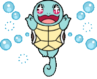
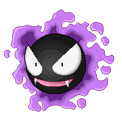
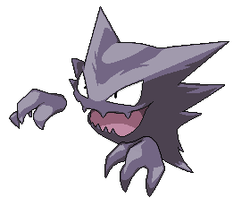

-
Bulbasaur #001

- Grama
- Veneno
Bulbasaur são escassos na natureza. Às vezes, eles podem ser encontrados em lugares secretos como jardins, planícies perto de grandes fontes de água doce, ou se escondendo na floresta em troncos ocos, mas no geral, eles são encontrados com mais freqüência na posse de Treinadores. Ele é nativo de Kanto.
-
Ivysaur #002

- Grama
- Veneno
Ivysaur é um pokémon inicial do tipo Grama e Venenoso introduzido na Geração I. Ivysaur é um Pokémon que evolui de Bulbasaur no nível 16. Ivysaur tem melhores estatísticas do que Bulbasaur, mas aprenderá ataques em um tempo maior.
-
Venusaur #003

- Grama
- Veneno
Venasaur é um Pokémon quadrúpede com pele verde acidentada, e azulada. Ele tem olhos pequenos e circulares vermelhos, dois dentes pontiagudos em sua mandíbula superior, e quatro dentes pontiagudos em sua mandíbula inferior. Tem três dedos com garras em cada pé. Possui um grande coqueiro em suas costas.
-
Squitle #001
- Agua
Uma apetitosa tartaruga azul que atira jatos de água de sua boca e adora causar altas confusões quando está surfando com seus miguxos. Normalmente simpático, só para atrair qualquer guri retardado que ousa escolhe-lo como ínicio de sua aventura, mas no final vira um monstrengo como qualquer terceira evolução de um pokémon inicia
-
Wartortle #002

- Agua
Wartortle são pequenos bípedes Pokémon, tartarugas com uma aparência semelhante à de sua forma pré-evoluída, Squirtle. Algumas diferenças são que Wartortles desenvolveram garras e os dentes mais nítidas e maiores.
-
blastoise #003

- Agua
Blastoise tem canhões de água que se projetam de seu casco. Os canhões de água são muito precisos. Eles podem disparar balas de água com uma precisão suficiente para atacar latas vazias de uma distância de mais de 160 pés.
-
Charmander #001

- fogo
Charmander é um pequeno dinossauro bípede como pokémon. A maioria da cor do seu corpo é laranja, enquanto o seu ventre baixo é de cor amarelo-claro. Charmander, como suas evoluções, tem uma chama na ponta de sua cauda que arde constantemente.
-
charmeleon #002

- fogo
Charmeleon tem uma natureza perversa e constantemente procurando adversários. Adversários fortes excita este Pokémon, fazendo-a jorrar chamas azuis que tocham seus arredores. No entanto, uma vez que relaxar ganhou. É raro na natureza, mas pode ser encontrado em áreas montanhosas.
-
charizard #003

- fogo
- voador
Charizard é um Pokémon dracônico e bípede . É principalmente laranja com uma parte inferior creme do peito até a ponta da cauda. Tem um pescoço longo, pequenos olhos azuis, narinas ligeiramente levantadas e duas estruturas semelhantes a chifres saindo da parte de trás de sua cabeça retangular.
-
Gastly #001
- fantasma
- veneno
Gastly é composto em maior parte por gás. Se exposto a um vento bem forte, seu corpo gasoso se desforma. Grupos desse Pokémon geralmente se juntam nas calhas de casas para escapar de rajadas de vento.
-
Haunter #002
- fantasma
- veneno
Haunter é um Pokémon perigoso. Se um aparecer na sua frente enquanto estiver flutuando na escuridão, você jamais deve se aproximar. Ele vai tentar te lamber com sua língua e tirar sua vida de você.
-
Gengar #003

- fantasma
- veneno
Gengar, um Pokémon que espreita nas sombras, é um mestre dos ataques-surpresa. Ele consegue aparecer sorrateiramente por trás dos oponentes sem dar um pio.